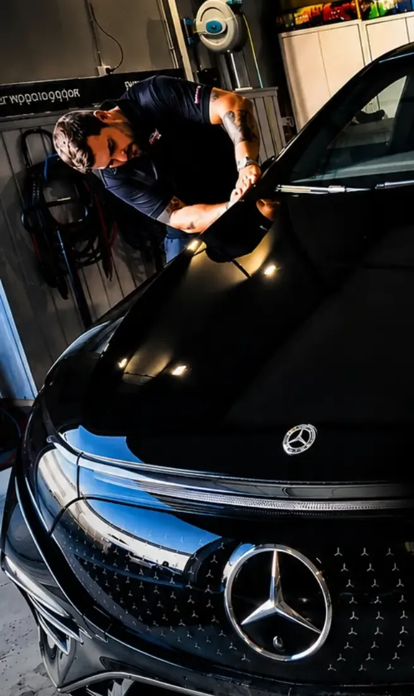

Wash and prep
The car is cleaned thoroughly to remove dirt and contaminants.

Protect your car’s original paint with transparent PPF. At Wrappi – Wrapping Art Design we fit professional, near-invisible paint protection film in Oslo — full PPF or front PPF, chosen to suit your car and how you drive.



A transparent, hard-wearing film fitted directly onto your car’s painted surfaces.
PPF stands for Paint Protection Film. It is also called paint protection foil, stone chip film, clear film or clear bra.
The film sits between the paint and the outside world. It is made to reduce the risk of paint damage from everyday driving and to help keep the car’s original look over time — without changing its colour.
PPF reduces the risk of damage, but does not give complete protection against deep scratches, hard impacts or every kind of stone chip.
Our PPF is self-healing. Many light surface scratches in the film’s top layer fade or disappear with heat, for example from sunlight. That helps the film keep a clean surface through normal use.
Deep scratches and damage that go through the film will not heal themselves.
Norwegian driving is hard on paint. In winter the car meets road salt, sand, gravel and dirt, and on motorways small stones hit the front. The bonnet, front bumper, front wings and mirrors take the most.
For drivers in Oslo, Alnabru, Lørenskog, Lillestrøm and Romerike, PPF is a practical way to keep the paint in shape through daily commuting and longer trips.
Every painted exterior panel covered with near-invisible film, where materials and construction allow.
Full PPF suits new cars, EVs, sports cars, premium cars and anyone who wants to keep the paint in the best possible condition.
We shape the film to the car’s lines and wrap it around the edges wherever that is technically possible and sensible. On some panels a seam is needed for a good fit and to keep the film from lifting.
Our aim is a discreet, professional finish that lasts.
Effective paint protection where it matters most — without fitting PPF to the whole car.
The front takes most of the stone chips, gravel and road dust while you drive. Clear stone chip film lowers the risk of damage on exactly those areas. A front PPF package can include:
The package is adapted to the car model and the agreed scope.
We also fit PPF on single exposed areas, such as door edges, the area behind the door handles and the sills.
Front PPF gives targeted protection on exposed areas, while the rest of the car keeps its original look.
EVs, hybrids, petrol and diesel cars — every model has its own shapes, so the fit is made for your panels, edges and details.
Whether it is full PPF on a Tesla Model Y, stone chip film on a BMW or front PPF on a new Mercedes-Benz, we help you find the right solution for the car.
We get asked a lot which PPF film we use. Here are the numbers from the manufacturer's technical data sheet.
Full PPF normally takes 3–4 days, depending on the car and the scope. A good result takes the right prep, an exact fit and a professional install.
The car is cleaned thoroughly to remove dirt and contaminants.
We check the condition of the paint and whether it needs polishing first.
The PPF is shaped to the car’s panels, lines and details.
The film is fitted with a suitable mounting fluid and precision.
We check surfaces, edges, seams and finish.

The car gets the drying time it needs before handover. Please don’t wash it for the first 48 hours — and come back for a follow-up check about a week later.
Quality takes time. The film needs time to dry and settle after fitting.
Lifetime depends on film quality, fitting, use, care and the conditions the car lives in.
At Wrappi we use PPF film with a 10-year manufacturer warranty, under the manufacturer’s warranty terms. With the right care, PPF gives long-lasting protection and helps keep the paint in good shape.
The warranty covers the conditions set by the manufacturer and does not automatically cover damage from stone chips, accidents or misuse.
PPF is physical protection against stone chips, light scratches and wear. We can also add a ceramic coating made for PPF on top, which makes the surface water-repellent and easier to clean — a good combination if you want both protection and easy care.
Switch between full PPF and front PPF, pick your car and paint colour, and turn it around.
For many owners PPF is a good investment, especially on new or high-value cars. The film lowers the risk of stone chip damage and helps keep the original paint. Whether it pays off depends on the car’s value, how you drive and how much the paint’s condition matters to you.
PPF can normally be removed from original paint in good condition when it is done correctly. On repainted or damaged surfaces the risk of paint damage is higher. We recommend professional removal.
Yes, as normal, with suitable car care products. Wait at least 48 hours after fitting, and don’t aim a pressure washer straight at the film’s edges from close range.
Modern, high-quality PPF is made to resist yellowing and discolouration. How well it holds up depends on material quality, exposure and care.
Yes. We check the paint first. Cars with scratches or other paint damage may need polishing or other prep.
Full PPF protects the car’s painted exterior panels; front PPF focuses on the areas at the front that take the most stone chips. The choice depends on the protection you want and your budget.
Normally 3–4 days. The time varies with the model, how complex it is and how much prep it needs.
Clear PPF is made to be as discreet as possible. On some panels edges or seams can be visible, depending on the car’s shape and the fitting method.
Full PPF from NOK 39,000 for a sedan, from 45,000 for an SUV and from 50,000 for a van. The front PPF package costs NOK 16,000–22,000, depending on the car. These are starting prices — the price goes up with the size of the car, its shape and how much work it needs. Send us make, model and year for an exact quote.
Precision, quality and personal service — every fitting adapted to the car’s shape and your needs.
We are on Strømsveien 324 in Oslo, easy to reach from Alnabru, Grorud, Lørenskog, Strømmen, Lillestrøm, Skedsmo and the rest of Romerike.
Send us make, model and year, and which protection you want. We’ll come back with a no-obligation quote.